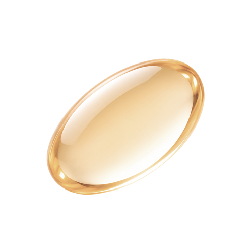
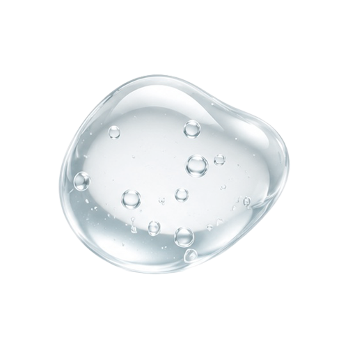
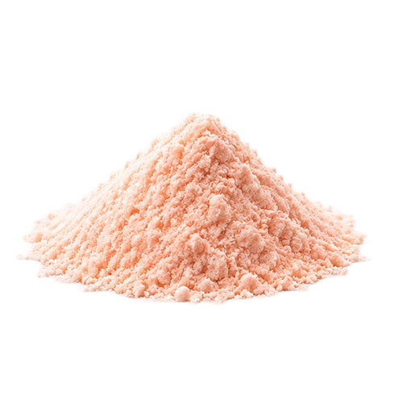

50Years年
In the health industry
深耕健康行业
Nearly five decades of health product development, supporting better wellbeing and a healthier community.
近五十年健康产品研发经验，守护大众健康与美好生活。
Kia Ora
New Zealand health supplement R&D and manufacturing since 1979. 始于 1979 年，新西兰保健品研发与制造。

About Unipharm关于 Unipharm
Since 1979, Unipharm has brought together research, formulation and manufacturing expertise to help health brands bring their ideas to life.
自 1979 年起，Unipharm 融合研发、配方与生产能力，助力健康品牌将创意变为现实。
Drawing on New Zealand’s dairy, plant and marine ingredients, we develop tailored nutritional products across a wide range of dosage forms.
依托新西兰优质的乳制品、植物与海洋原料，我们为客户开发覆盖多种剂型的定制营养产品。
Our Dosage Forms产品剂型
We excel in patented processes and complex formula R&D, offering full customization to meet your needs.
我们专注于专利工艺与复杂配方研发，提供全面定制服务，满足您的需求。

Softgel Solutions
软胶囊剂型解决方案

Capsule Solutions
硬胶囊剂型解决方案

Liquid Formulations
液体剂型解决方案

Tablet Solutions
片剂解决方案

Powder Solutions
粉剂解决方案
Drops & Spray Solutions
滴剂与喷雾解决方案
Why choose Unipharm为什么选择 Unipharm
Connect the healthy era. Grow with a partner you can trust.
连接健康新时代，与值得信赖的伙伴共同成长。
Nearly five decades of health product development, supporting better wellbeing and a healthier community.
近五十年健康产品研发经验，守护大众健康与美好生活。
Robust quality systems shaped by New Zealand and international regulatory standards.
依据新西兰及国际法规标准建立的完善质量体系。
Ideas in technology, formula creation and product development, protected and advanced by our experienced team.
在技术、配方与产品开发领域持续创新，由经验丰富的团队推动。
Trusted by health brands across markets including Japan, Australia, China, South Korea and Singapore.
深受日本、澳大利亚、中国、韩国、新加坡等市场健康品牌的信赖。
Build on a library of proven formulas, with custom R&D tailored to each brand partner's needs.
依托成熟配方库，并为每位品牌伙伴提供定制化研发。
Efficient, modern manufacturing for capsules, liquids, tablets and powders at dependable scale.
高效现代化生产软胶囊、液体、片剂与粉剂，规模稳定可靠。